Concordance¶
Clicking onto the ‘Concordance’ tab will take you to the concordance view. In order to create a concordance, you will need to select a corpus to search in (see The CLiC corpora).
Search the corpora¶
This is where you select a corpus to search in. The selection is very flexible and lets you pick a pre-defined corpus (see The CLiC corpora) or choose your own subcorpus – with any of the books available in CLiC.
Only in subsets¶
Here you can decide whether you want to search through ‘all text’ – the whole book(s) – or just one of the subsets: ‘short suspensions’, ‘long suspensions’, ‘quotes’ and ‘non-quotes’ (see The CLiC corpora).
Search for terms¶
This is the fundamental parameter of the concordance search – it lets you determine the node word or phrase that forms the basis of the concordance.
The tokenisation from CLiC 2.0 onwards is based on unicode standard rules (i.e. Unicode word boundaries implemented with the [ICU] library), used both for queries and importing books.
We consider a boundary mark to be a word-boundary if…
The [ICU] library describes it as at the end of a word, e.g.
jumpor number, e.g.32.3.It is a single hyphen character surrounded by alpha-numeric characters.
It is an apostrophe preceded with
s, e.g.3 days' work.It is one of a whitelist of words preceded with an apostrophe, e.g.
'tis.
CLiC 2.0 and onwards supports wildcards:
*means “zero or more characters”, for example:Placing * at the end of a the sequence
canserves as a placeholder for any sequence of characters (or zero) and therefore retrieves all instances of words starting with this sequence, includingcan,cannotandcan't(but alsocandle,candles,candlesticketc.)*inwith * handsserves as a placeholder for any word token betweenwithandhands, retrieving sequences likewith her hands,with his hands,with their hands,with both hands,with clean handsetc.?means “one”
The search will only retrieve valid tokens according to the rules above. This means that the search will ignore punctuation in your search query, and searching for a punctuation sign alone will not retrieve any results. If your research focuses on punctuation markers you can evade this issue by using the filter function in the subset tab: Go to the subset tab, select the relevant subset, for example non-quotes, and filter the rows to the punctuation marker of interest.
Two hyphens separate words: for example, Char–lotte in Oliver Twist (OT.c6.p20) “Oliver’s gone mad! Char–lotte!” counts as two tokens.
For the detailed technical documentation and more examples see clic.tokenizer.
‘Whole phrase’ or ‘Any word’¶
When you have entered several terms, you need to specify whether it is to be searched as one phrase (equivalent to using double quotes in a search engine, e.g. dense fog) or any of the words individually (dense and fog).
Co-text¶
The maximum number of words in the co-text is set at 10 on either side in a concordance (depending on the length of the words and the size of the screen you might see fewer). You can see the full chapter view by clicking on ‘in bk.’ (in book) button at the end of any row (see Fig. 8 and Fig. 9).
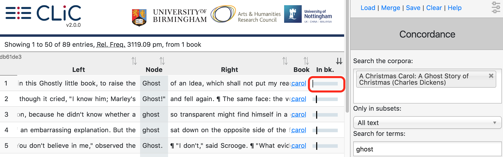
Fig. 8 The ‘in bk.’ (in book) button leads to the book view of the occurrence¶
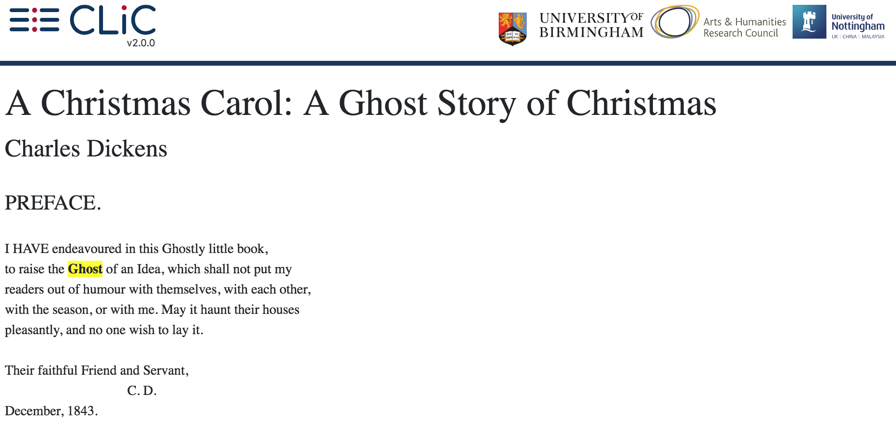
Fig. 9 The ‘in bk.’ view shows the relevant section in the whole book.¶
The preface shown here is a very short chapter. (Note that all authorial text occurring before the official first chapter, is counted as ‘chapter 0’ in CLiC). This preface contains no quotes or suspensions; compare to the subset markup in the chapter view shown above.
Results¶
These options allow you to adjust the way the concordance output is displayed.
Filter rows¶
This filter option lets you filter the concordance output by the rows
that contain a particular sequence of letters (both in the node and
co-text). For example, searching for hands in Oliver Twist yields 124
results; when we use the option ‘filter rows’ and search for
pockets, this is filtered down to 8 results as illustrated in Fig. 10.
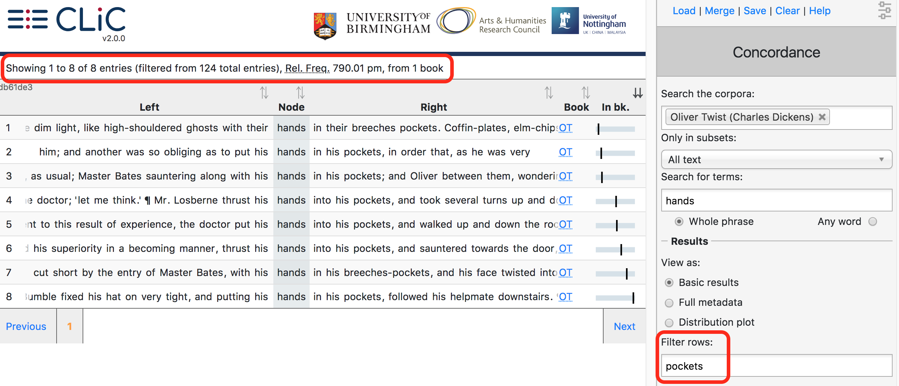
Fig. 10 Concordance of hands in Oliver Twist filtered down to
pockets in the co-text¶
Note that the filter, when searching for character sequences does not
necessarily search for complete words: for example, filtering a
concordance of head in Oliver Twist for eat yields both
occurrences of the verb eat, and the instance threatened, which
contains the same sequence of letters (see Fig. 11).
The filter function is cruder than the KWICGrouper; it can be usefully
applied to filter down a large set of results before you do a more
fine-grained categorisation. You might want to filter down the results
to rows containing similar word forms. For example, filtering for girl
will also retrieve rows containing girlish and girls. Moreover,
unlike the main concordance search and the KWICGrouper, the filter lets
you search for particular types of punctuation (e.g. round brackets used
in suspensions).
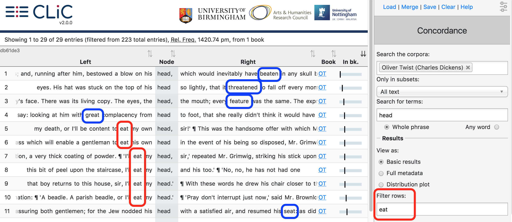
Fig. 11 Filtering for the letter sequence eat returns forms of
the verb eat and other words containing the sequence¶
View as¶
From CLiC 2.0 onwards there are three options to view the concordance results:
Basic results: concordance lines + book short title; link to “in bk.” view
Full metadata: concordance lines + book short title; chapter, paragraph & sentence numbers; link to “in bk.” view
Distribution plot: overview of matching lines per book
The default view is 1. and 2. gives more information on the same view. View 3. is completely different: it does not show the text in concordance lines but plots the distribution of matching concordance lines across the searched books. Note that if a book in the searched corpus has zero matches it will not be shown in the distribution plot (hence, Fig. 12 only shows 10 out of the 15 books in the DNov corpus).
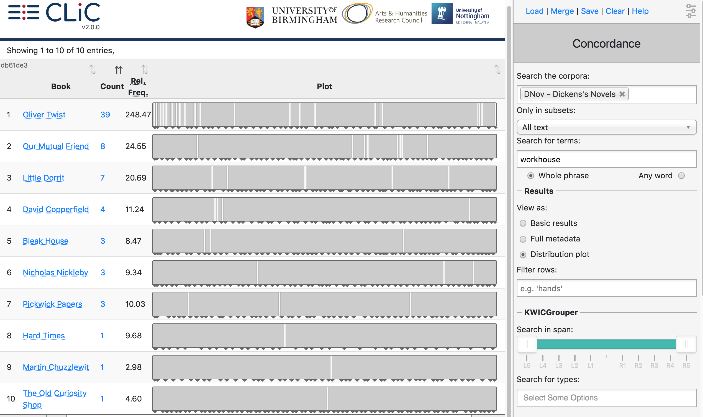
Fig. 12 Distribution plot of workhouse in DNov¶
Like the concordance view, the distribution plot view can show “KWICGrouped lines” i.e. lines that contain particular patterns in the proximity of the nodes (see the KWICGrouper section below for a detailed example). Once the KWICGrouper is activated by selecting word types in KWICGrouper box in the menu bar, the corresponding instances in the distribution plot are coloured. Fig. 13 shows coloured lines containing references to children (boy, chance-child, charity-boy, child, children, girl and orphan). Light green represents one match in the concordance line, a darker green two and purple three matches. (Not displayed here: a line with four matches would be shown in pink.)
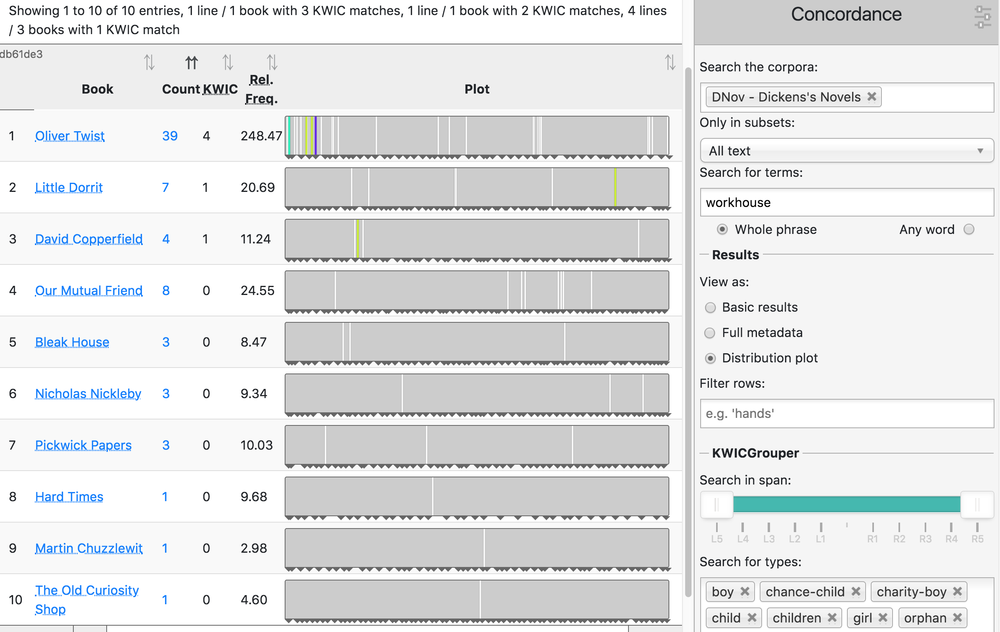
Fig. 13 Distribution plot of workhouse in DNov, KWICGrouped for references to children¶
Basic sorting¶
The concordance lines can be sorted by any of the columns in the concordance by clicking on the header, which will then be marked with dark arrows. For example, by clicking on ‘Left’ the lines will be sorted by the first word to the left of the node and by clicking on ‘Right’ by the first word on the right. If you have the metadata columns activated you can also sort by these, for example to sort all entries by chapter. Similarly, if you have created your own tags (see the section Manage tag columns below), you can sort for lines with a particular tag. Clicking on the same header a second time will reverse the order of sorting.
Note that you can create a “sorting sequence” by clicking on various headers while pressing the shift key. For example, you could sort a concordance first by the words on the right and then by book, as illustrated in Fig. 14, which shows a concordance of fireplace sorted first by book – so that results from Barnaby Rudge (BR) come first – and then ordered by the co-text on the right.
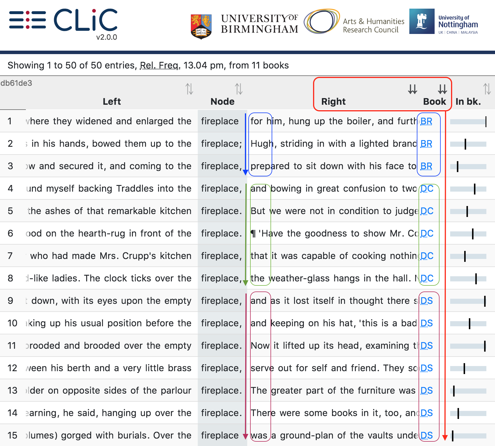
Fig. 14 Concordance of fireplace in DNov (Dickens’s Novels) – first ordered by book, then by the first word on the right¶
KWICGrouper¶
The KWICGrouper is a tool that allows you to quickly group the concordance lines according to patterns that you find as you go through the concordance. For a basic introduction to the KWICGrouper functionality (in the CLiC 1.5 interface) you can watch our KWICGrouper video tutorial from May 2017 [CLiC_KWICGrouper_video].
The idea of the KWICGrouper is that you look for patterns as you search for particular words. Any matching lines will be highlighted and moved to the top of the screen. Among the matching lines we further distinguish between the lines based on how many matches they contain. A line with one match is highlighted in light green, lines with two matches are coloured in a darker green, those with three in purple and, finally, those with four in pink. (For lines with more matches than these, the colours will repeat.) The KWICGrouper gives you two options:
‘Search in span’: Set the span for the KWICGrouper search. By dragging the slider you can adjust the number of words that will be searched to the left and right of the search term. The maximum (and default) span is 5 positions to either side.
‘Search for types’: Choose one or more words to search for in the span. This is currently limited to single words, but there is no limit on how many words you add.
The total number of matching rows will be displayed at the top; the process is illustrated in Fig. 15 and Fig. 16, which show 1. the plain concordance lines as returned when searching for fire in Dickens’s novels and 2. the process of choosing types (forms of words) from co-text surrounding fire in the concordance in order to group the concordance lines.
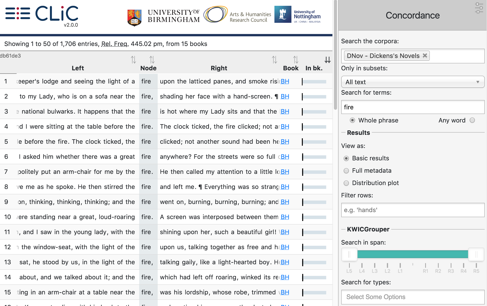
Fig. 15 The first concordance lines of fire in DNov (Dickens’s Novels) with the default sorting by ‘in bk’¶
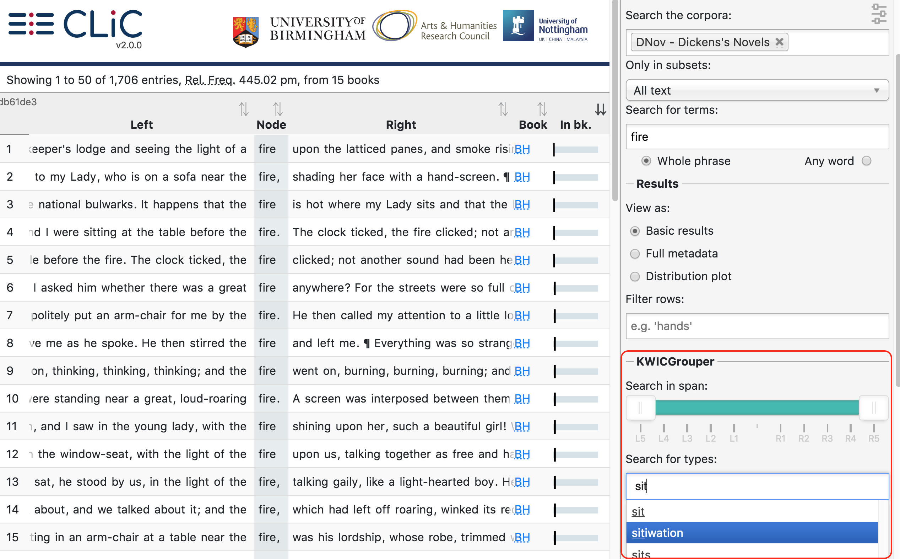
Fig. 16 Selecting types related to sitting from the KWICGrouper to group the concordance lines¶
The dropdown only contains those word forms that actually appear around the node term in the specified search span. Therefore, while sitiwation is listed here, it wouldn’t be listed if we had searched for another node term or used other books; it only appears once in this set in the following example context:
I don’t take no pride out on it, Sammy,’ replied Mr. Weller, poking the fire vehemently, ‘it’s a horrid sitiwation. I’m actiwally drove out o’ house and home by it.The breath was scarcely out o’ your poor mother-in-law’s body, ven vun old ‘ooman sends me a pot o’ jam, and another a pot o’ jelly, and another brews a blessed large jug o’ camomile-tea, vich she brings in vith her own hands.’
[Pickwick Papers, Chapter LI.]
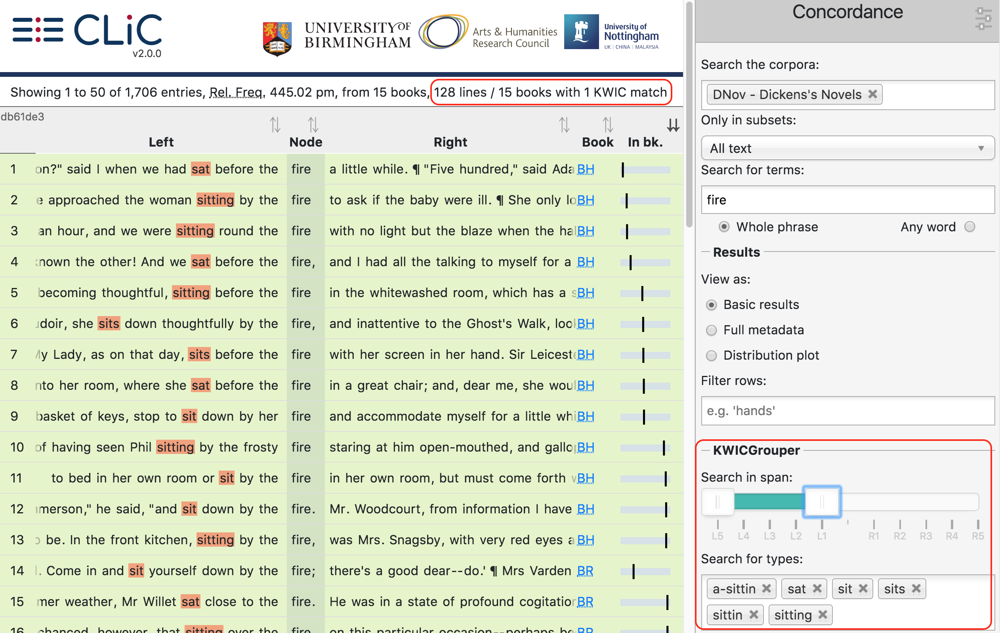
Fig. 17 The resulting ‘KWICGrouped’ concordance lines: the selected types are listed in the search box on the right; and in the case of this example it is suitable to restrict the search span to only the left side of the node¶
The KWICGrouper only searches through a number of words to the left and right of the node term, as specified by the search span. Fig. 17 shows the resulting concordance lines according to the KWICGrouper settings after manually choosing types related to the action of sitting. Apart from the selected search types the search span has also been restricted to the left side so that clearer patterns of sitting by the fire become visible.
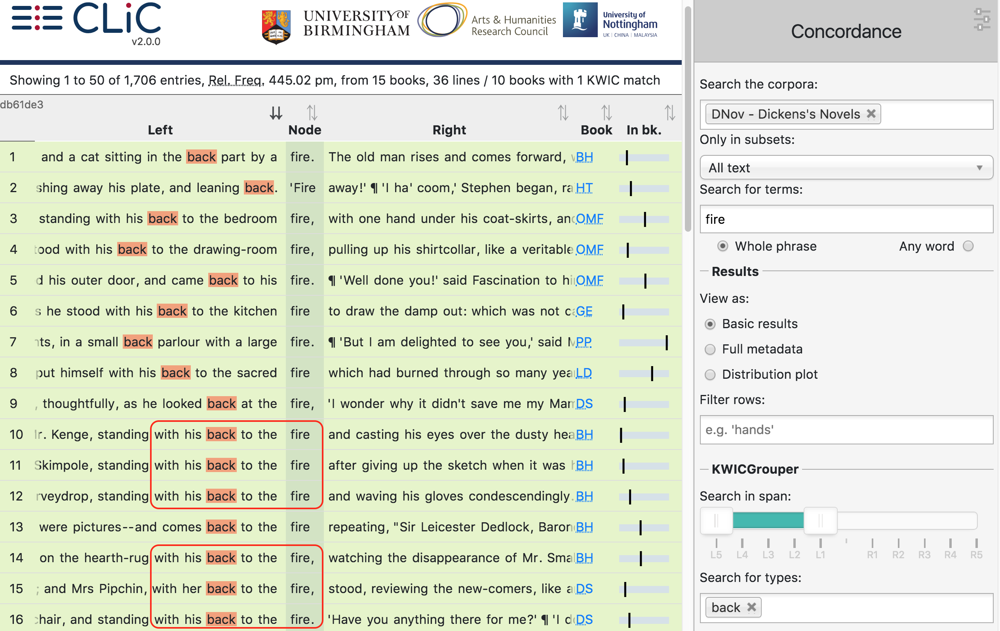
Fig. 18 The first lines of fire co-occurring with back (i.e. one KWICGrouper match) are highlighted and moved to the top¶
Apart from looking for characters sitting by the fire, it might also be of interest to look for characters standing by the fire. We have shown in our previous work (see Chapter 6 of [Mahlberg_2013]) that the cluster with his back to the fire is prominent in Dickens’s and 19th century novels by other writers. Fig. 18 shows the first concordance lines of fire with back on the left (sorted to the left).
The output from the KWICGrouper lists at the top of the screen the number of lines that contain any number of matches. In this case there are only lines with one match, but no lines with more than one match. The message “36 entries with 1 KWIC match” means that 36 lines contain both fire and back. This function becomes useful when we now look for gendered pronouns. As shown in Fig. 19, there are 27 lines in which fire co-occurs with both back and his. Most of these occurrences appear in the pattern with his back to the fire, as becomes obvious when we reverse the sorting on the left so that his occurs at the top in the first position to the left of fire – the L1 position. On the other hand, as we can see from Fig. 20, Dickens’s novels contain only one instance of fire co-occurring with back and her (with her back to the fire).
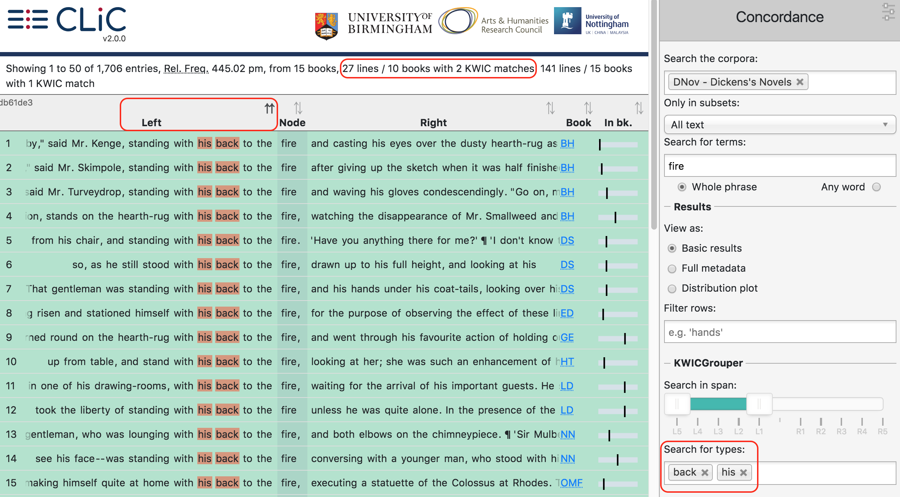
Fig. 19 The 27 lines with two matches (here, back and his) are highlighted in a darker green¶
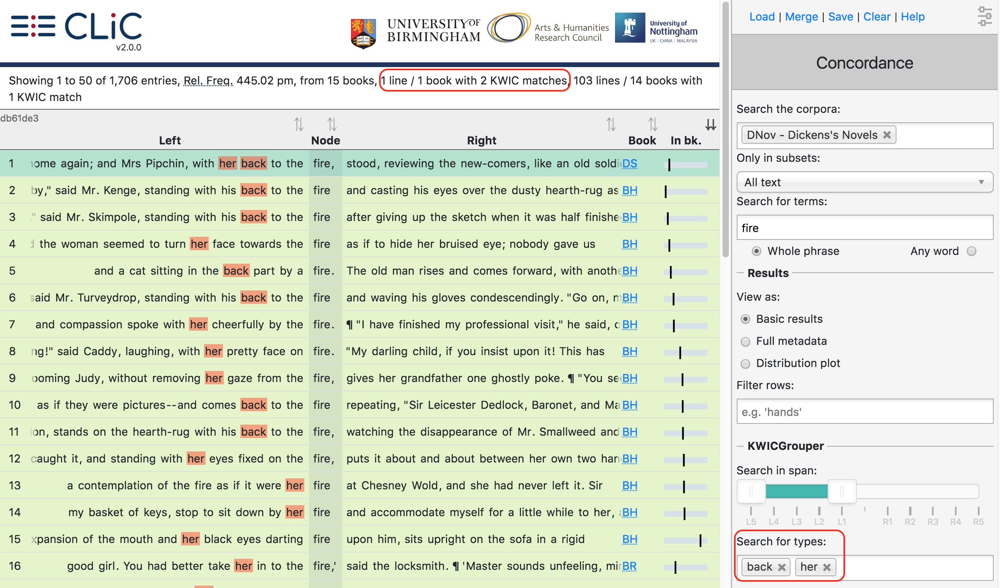
Fig. 20 Only one line contains both back and her; it is highlighted and shown above single match lines¶
Manage tag columns¶
Once you have identified lines with patterns of interest, you might want to place these into one or more categories. CLiC provides a flexible tagging system for this. Fig. 21 illustrates what a tagged concordance can look like. The tags are user-defined so you can create tags that are relevant to your project. In this case, occurrences of dream in Oliver Twist have been tagged according to who is dreaming.
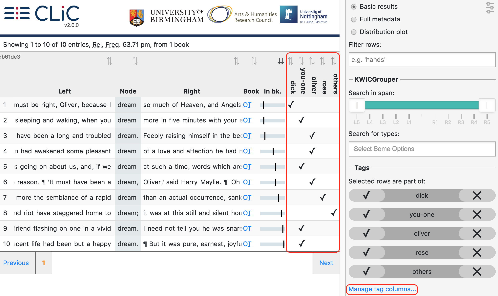
Fig. 21 Tagged concordance lines of dream in Oliver Twist¶
In order to tag the lines, click on ‘manage tag columns’ (shown in the bottom right corner of Fig. 21) and create your own tag(s) through the ‘Add new’ option (see Fig. 22). You can rename a tag by selecting it from the ‘Tag columns’ list and renaming it in the text box. Once you have created your tag(s), you can click ‘Back’ to return to the menu. Now you can select the relevant concordance lines by clicking on them and you will see that the sidebar contains the list of your tags. Once one or more lines are selected you can click the tick next to the relevant tag in order to tag the line (see Fig. 23). An extra column will appear for each tag and you can sort on these columns as mentioned in the Basic sorting section above. Selected and tagged rows will be automatically deselected when you click on (i.e. select) a new row.
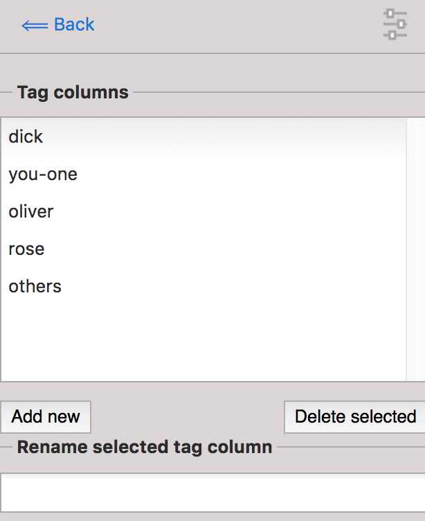
Fig. 22 The menu for adding and renaming tags¶
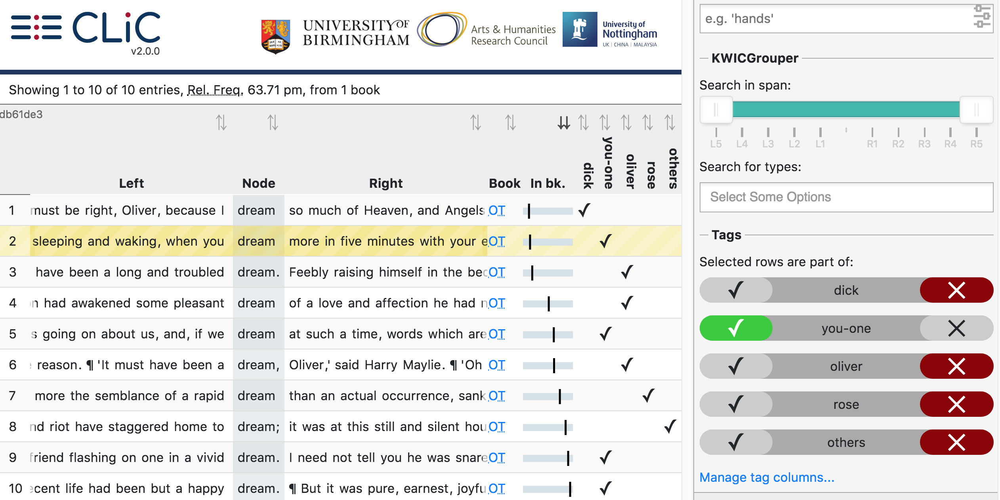
Fig. 23 Select a line (by clicking on it) in order to apply an existing tag; once tagged, the tick in the sidebar will appear green for the selected line. A tick will also be added to the tag column in the concordance itself.¶